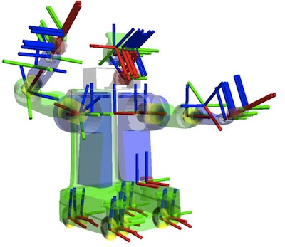
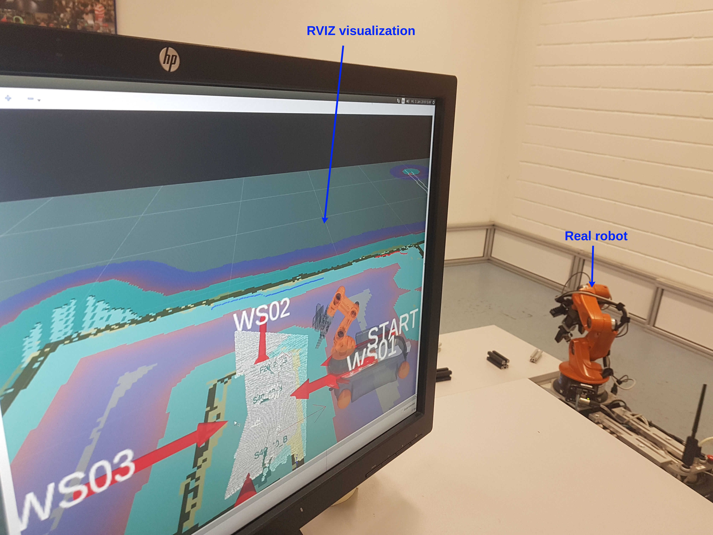

Robot Operating System (ROS)¶
Robot Operating System (ROS) adalah sebuat tool atau disebut juga middleware yang sudah sangat populer di kalangan para robotic researchers. ROS juga sangat banyak digunakan di industri, dan saat ini ROS adalah must-have atau suatu keharusan di bidang robotics.
ROS pertama kali dikembangkan di lab Willow Garage pada tahun 2007 di Stanford University. Proses pengembangan tersebut melibatkan banyak researchers dari pakar robotik. Hinggal awal tahun 2009. ROS 0.4 dirilis dan setahun setalahnya ROS 1.0 pun di release. Setiap 2 tahun, ROS me-release versi LTS nya, dan sampai tahun 2021, versi LTS terakhir adalah Noetic yang di-release tahun 2020. Namun sejak tahun 2018, OSRF, yang merupakan organisasi induk dari ROS, me-release ROS 2 versi LTS (selama 2 tahun). Akan tetapi, adopsi dari ROS 2 baik di industri maupun akademi, masih belum masif di tahun 2021.
ROS saat ini fully support Linux, namun juga bisa di install di Windows. Instalasi ROS juga bisa dilakukan meskipun Linux tersebut hanya berjalan di virtual box, semisal ada pengguna yang cukup cinta sama Windows dan tidak mau menginstall Linux, bisa menggunakan virtual box, install Linux kemudian install ROS nya.
Fitur ROS¶
Standard message-ing yang memungkinkan developer untuk mengeneralisir sebuah pesan, yang berarti sebuah pesan bisa digunakan misalnya untuk dua bahasa pemrograman seperti python dan C++ tanpa harus mengubah strukturnya.
Robot geometry library (tf): memungkinkan kita melakukan transform, rotasi, dll.
Contoh tf (source: http://wiki.ros.org/tf)¶
Robot description language seperti xacro
Preemtable remote procedure yang memungkinkan robot untuk menunda sebuah action apabila ada kendala saat melakukannya
Diagnostic memungkinkan developer untuk memonitor hardware seperti check kapasitas battery
Navigation stack adalah software package tersedia di ROS dimana data dari odometry, dan/sensor lain, destinasi di proses sehingga menghasilkan velocity commands yang dikirim ke base robot agar bisa bernavigasi.
rqt: memungkinkan kita untuk melihat nodes yang sedang berjalan, configuratiron, visualisasi data sensor, dll.
RVIZ: memungkinkan kita untuk memvisualisasi robot dengan GUI.
Visualisasi dengan RVIZ¶
Kemudahan ketika digunakan dengan library/software robotics Elain seperti:
Gazebo: memungkinkan kita untuk membuat 3d simulasi dari robotnya dengan kinemtik physics misalnya inersia dari sebuah arm. Ada banyak simulasi yang lain yang sudah terintegrasi dengan ros seperti stage.
OpenCV
PointCloud library: memungkinkan kita untuk melakukan 3d scanning menggunakan depth camera atau laser.
MoveIt: adalah sebuah motion planning library yang digunakan misalnya untuk robot arm atau humanoid robotics. Salah satu fitur yang banyak digunakan adalah self-collision checks.
Komponen dasar ROS¶
ROS master: menyediakan penamaan dan registrasi dari setiap node yang berjalan, mentracking setiap publisher dan subscriber kepada topics dan service. Ini adalah syarat utama agar ROS bisa berjalan, karena ROS masterlah yang bertanggung jawab atas semua aktifitas dalam system itu sendiri.
Node: merupakan executable program yang melakukan komputasi. Ini sama seperti main, dimana semua topic dan service di publish berdasarkan node. Setiap topic dan service memiliki node yang menjalankan mereka. Setiap node yang berjalan di ROS master memiliki identitas unik yang berbeda satu sama lain. Node yang satu bisa berkomunikasi dengan node yang lain melalui topic, misalnya node_a mempublish message bertipe string melalui topic_x, kemudian node_b mensubscribe ke topic_x dan mendapatkan data dari node_a. Begitupula sebaliknya.
Messages: merupakan sebuah interface definition language (IDL) yang di bungkus dalam file .msg. Message juga mendukung tipe data dasar seperti int, string, float, boolean dll. Message juga bisa mendeklarasikan message yang lain. Sebuah message juga bisa mendeklarasikan sebuah array dari message yang lain.
Topic: digunakan untuk komunikasi antar node-node. Setiap topik di berisi informasi yang bersesuaian dengan tipe message yang digunakan. Misalnya sebua message_a yang berisi satu variable integer dan satu variable string, di publish oleh sebuah topic_a, kemudian setiap node yang men-subscribe ke topic_a tersebut harus juga memiliki tipe message_a. Satu node bisa mem-publish lebih dari satu topic dan bisa men-subscribe lebih dari satu topic.
Service: juga merupakan alat komunikasi, namun lebih fleksibel daripada topic. Dikarenakan sebuah service hanya bisa dipanggil apabila diperlukan. Misalnya kita bisa membuat sebuah service untuk mendeteksi sebuah objek dari kamera, dan sebuah node bisa memanggil service ini apabila diperlukan saja. Perbedaannya dengan topic adalah bahwa topic akan terus menerus mem-publish sebuah data apabila ada dan sebuah node akan men-subscribe terus menerus ke sebuah topic. Sedangkan service hanya dipanggil apabila sedang dibutuhkan. Keduanya sangat penting dan akan dijelaskan lebih jauh melalui video kami nanti, dengan contohnya pula.
Perbedaan utama antara Topic dan Service
Topic: digunakan untuk data yang berkelanjutan, misalnya data dari sensor. Penerima data dari topic tertentu akan segera memproses data tersebut melalui callback.
Service: digunakan pada saat dibutuhkan, misalnya meminta robot untuk menggerakkan motor dan akan berhenti melakukan permintaan secara cepat. Service tidak akan melakukan apa-apa apabila tidak sedang diminta melakukan sesuatu.
Instalasi ROS¶
Saat ini ROS memiliki versi sendiri bergantung versi Ubuntu nya, misal Ubuntu 20.04 bisa diinstall ROS 1 noetic dan ROS 2 foxy.
Untuk lebih lengkap mengenai langkah-langkah instalasi ROS, silahkan kunjungi website resmi: